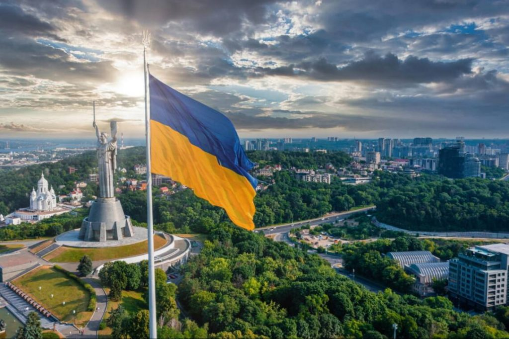
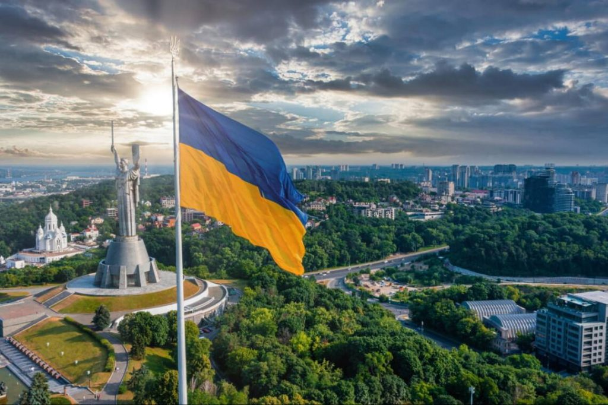

|
Повернутись на головну | Перейти в браузер google |
ФОТО
Фотографування є одним з моїх улюблених захоплень.
Це дуже приємно та весело. Мій особистий та відмінний спосіб релаксації є прогулянка по місту з камерою в руках та фотографування особливих моментів міста. Це по-особливому прекрасно, коли живеш в такому місті. Фотографія допомагає мені забути мої турботи і бачити красу в повсякденному житті. Це найкращий спосіб, щоб зупинити мить та спіймати момент, який може залишитися зі мною назавжди та. Це чудове почуття, коли отримуєш хороший кадр і можеш поділитися ним з іншими людьми. Існує думка, що неможливо зробити хороше фото без дорогої камери. Проте, особисто я, не згоден із цією думкою. На мою думку, це не камера, а саме ви робите фото. Камера є лише інструментом для фотографа, і саме він повинен мати повний контроль над інструментом для того, щоб отримати бажаний результат.
| Фокусна відстань, мм | Середня ціна об'єктивів Canon, $ | Середня ціна об'єктивів Nikon, $ |
| 24-70 | 2300 | 2600 |
| 35 | 2300 | 2100 |
| Вартість набору лінз на всі випадки життя | 6900 | 7700 |
Плани на майбутнє
У сучасному світі важко щось планувати, проте у мене є мрії. Хотіла б вивчити мистецтво зйомки в спеціальному навчальному закладі. На жаль, в Україні таких немає, проте сьогодні я вивчаю чеську мову та хочу продовжити навчання в Чехії. Перед тим планую пройти кілька курсів у школі Віктора Марущенка, переосмислити фотографію, і тільки після цього спробувати вступити до закордонного вишу. Можливо, цілі є занадто складними для досягнення, але хочу, щоб моє маленьке захоплення переросло в щось більше.
 

PS:"Я не є професійним фотографом, і ніколи не відвідував жодних класів по фотографії.
Я лиш хочу побачити світ під іншим кутом зору, та поділитися з іншими своїм баченням світу.
Отож, я почав експериментувати із недорогою камерою Canon в руках."